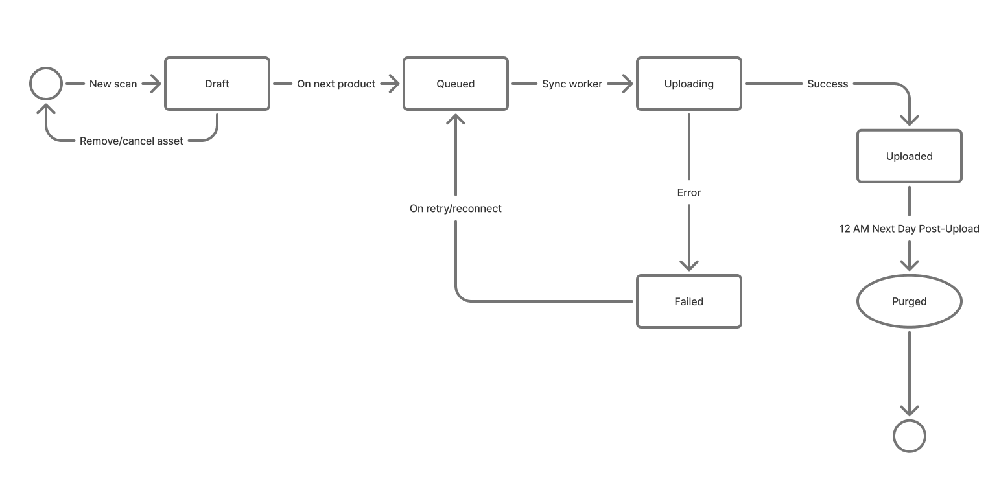

Internal Sample Management Mobile Application (WIP)
Role: UX/UI Designer (end-to-end), Developer (front-end)
Tech Stack: Figma, React Native, AI-assisted research synthesis, SQLite, standard React Hooks/Context
The Problem & Constraints
Warehouse staff were operating with a legacy application that lacked offline capabilities in an environment with notoriously spotty Wi-Fi. This unreliability severely eroded user trust, forcing staff into a manual, dual-entry workaround, cross-referencing scanned items against an external spreadsheet to ensure successful capture. Furthermore, the legacy system provided no immediate feedback for missed items, meaning tracking failures were only discovered reactively.
The Solution & Operational Flow
The application is an offline-first solution built around a highly concentrated, two-screen architecture that handles core receiving workflows without dependency on a continuous network connection.
Intake & OCR Processing: Users unpack deliveries and process items using a standard Android smartphone camera. Images of swing tags or alternative proof-of-receipt (like garment labels) are captured and processed through an OCR/Textract backend to extract product data.
Offline-First Reliability: By leveraging SQLite and standard React Context for state management, the app guarantees local data capture even in Wi-Fi dead zones. This instant, reliable feedback resolves the trust issue and eliminates the need for manual spreadsheet verification.
Design System & Technical Implementation
To ensure the interface was highly legible in a fast-paced, industrial setting, I established a foundational design token architecture in Figma utilizing both primitive and semantic variables. The brand's color palette was systematically adapted to prioritize high contrast and clear readability. Moving into development, I avoided heavy third-party UI libraries, opting instead to build out a lightweight library of custom React Native components mapped directly to the Figma variables.

Prototyping Complex Asynchronous Workflows
A major UX challenge was handling the backend OCR/Textract processing time without bottlenecking the warehouse staff. Instead of designing a synchronous flow that forces users to wait for instant validation after every scan, I architected an asynchronous, batch-scanning workflow.
By utilizing standard React Hooks and Context, I built a background queueing system. Users can continuously scan items in a rapid, unblocked loop. Meanwhile, a dedicated queue screen manages the data behind the scenes, visually organizing the batch into clear states: In Progress, Uploaded, and Failed. This logic was validated early through high-fidelity coded prototypes using local mock APIs to simulate the OCR delay and test the state management before final production.

Current Status & Next StepsFinal Solution
The application is currently in active development. The immediate next phase is focused on resilient error handling, specifically, designing how failed OCR scans are surfaced back to the user. Because the scanning flow is asynchronous, the current challenge lies in creating an intuitive UI that alerts the user to an errant scan in the queue without aggressively interrupting their ongoing scanning momentum, ultimately bridging the gap between technical error states and a seamless operational experience.
Results & Impact
By solving the challenge of inefficient data entry, the app reduced manual errors, improved completion of required fields and sped up the workflow for team members. Users reported that the process felt faster and more intuitive and the app quickly became the standard method for capturing product swing tag information. This project reinforced the importance of designing solutions that directly address user pain points, validating designs through usability testing and creating a consistent design system for scalable and reliable UI.